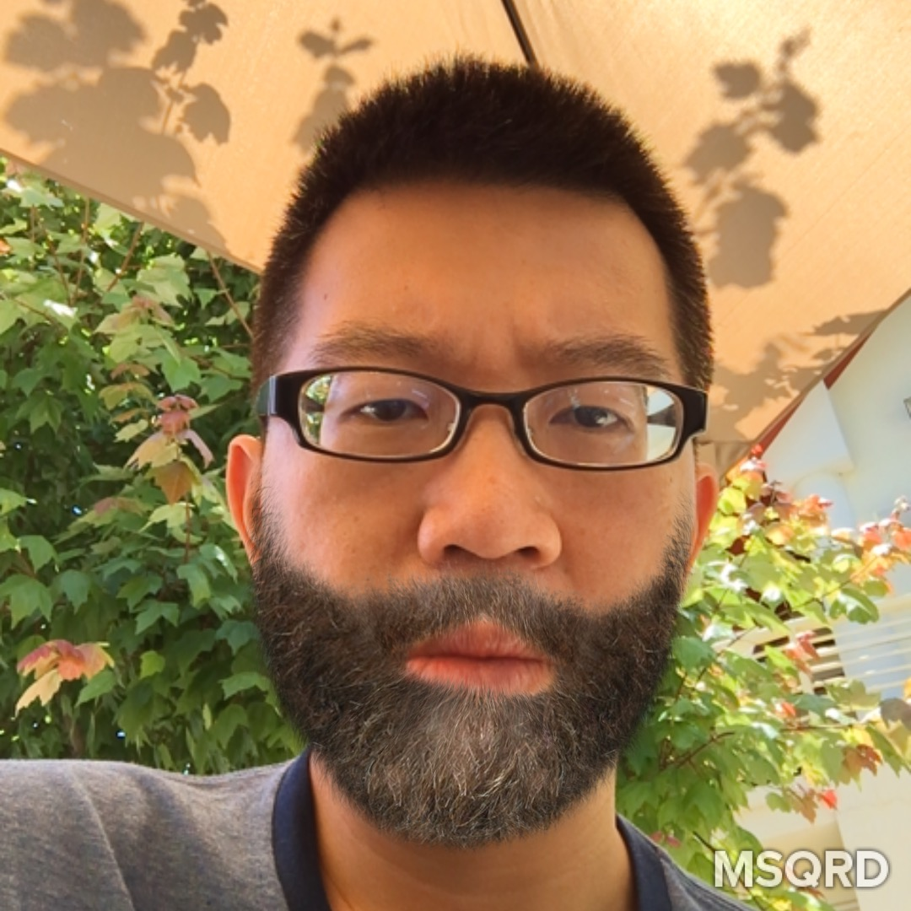

About Me
I'm Brian Fan. I'm originally from Taiwan. I came to the US to get my college degree in Texas. My first job after graductin from college is an AP/AR accoutant in the auto parts industry. After that I have worked as accounting specialist for big banks such as JP morgon chase, Bank of America and Wells Fargo.
I have been thinking about learning different programming languages for a long time. This march i joined Epicodus. I hope i will be able to find a job or intern after complete the courses.
Interest
Horror Movies
Video Games
Mountain Hiking
Tree Hugging